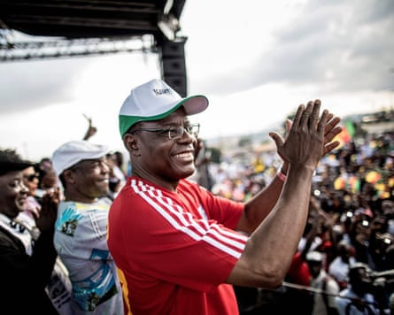
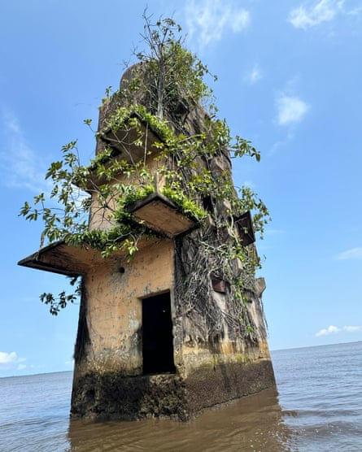
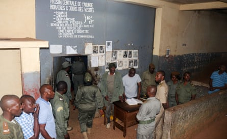
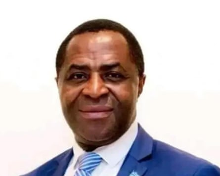

I n the visitors’ area in the courtyard of Kondengui maximum security prison, French-dubbed Nollywood films play on a TV as inmates and their guests hug each other and laugh. The green, red and yellow flag of Cameroon flutters above.
The happy picture in this corner of Cameroon’s capital, Yaoundé, belies the prison’s dark status as ground zero of Paul Biya’s five-decade crackdown on dissent in the central African country. Thousands of people have been detained and tortured here as Biya, who turned 92 this year, seeks to keep Cameroon under his grip.
Many arrived after the introduction of an anti-terrorism law in 2014 that allowed military tribunals to try civilians, “leaving [detainees] with virtually no procedural guarantees”, as Amnesty International put it in 2021 .
Inmates can spend years behind bars without trial. One was recently released after six years without trial on a charge of not producing an ID card when asked to by authorities. The maximum sentence in such a case is just a year.
The opposition leader, Maurice Kamto, spent nine months in Kondengui after protests against the 2018 election results.Photograph: Marco Longari/AFP/Getty Images
Among Kondengui’s inmates are dozens of supporters of the leading opposition party, Cameroon Renaissance Movement. Its leader, Maurice Kamto, spent nine months here after protests against the 2018 election results. “This regime believes that the [Kondengui] prison can fix everything,” he wrote in an open letter during his detention. “But even death cannot fix everything. Thoughts cannot be locked up.”
A history of repression
Cameroon’s leaders have always gone to great lengths to isolate dissidents and crush free speech. On a small island off the coast of Douala in the south-west lies the forgotten Manoka prison. Largely inaccessible and now reachable only by boat as it sinks into the Wouri River, Manoka was at one time used by the German colonial administration to lock up freedom fighters. The site was abandoned after Germany’s defeat in the first world war, though repression continued under the country’s new colonial masters.
Manoka prison, where the German colonial administration locked up freedom fighters.Photograph: Eromo Egbejule/The Guardian
Biya, who served as prime minister under Cameroon’s first post-independence president, Ahmadou Ahidjo, before taking over in 1982, stands accused of sustaining colonial-era repression in order to keep the population in check.
One such victim is Abdul Karim Ali , a peace activist from Cameroon’s anglophone regions who was sentenced to life in prison by a military tribunal in April for “hostility against the homeland” and “secession”.
In 2019, the government had invited Ali to participate in a Swiss-led mediation process aimed at finding a way out of the crisis in Cameroon’s English-speaking north-west and south-west regions, where what began as protests by teachers and lawyers in 2016 over marginalisation and identity evolved into clashes between security forces and armed separatists that have left more than 6,000 people dead.
Soldiers seized Ali in 2022. He was on his way to a hospital with his ill mother, days after he had named a notorious elite unit soldier in connection with alleged war crimes in the city of Buea.
“The practice of abduction, torture and trial by the military in a foreign language – French, in this case – is not only unlawful but also unjust, inhumane, and reminiscent of colonial-era oppression,” he told the Guardian.
Built in 1967 under Ahidjo, Kondengui had an initial capacity of 1,500 inmates. As of October 2024, it held six times that number , according to the justice minister, Laurent Esso.
At the entrance, gendarmes request 1,000 CFA francs (£1.30) or more to look after visitors’ phones. Inside, relative comforts such as toilet bowls, TVs and benches for visitors have been funded by the inmates themselves. Those not lucky enough to receive provisions from relatives or friends are provided with one meal a day. Some sleep out in the open courtyard rather than their cramped, overcrowded cells.
Security forces oversee the release of anglophone activists at the prison in 2017.Photograph: Reuters
In 2019 parts of the prison were set on fire in a riot over poor conditions. Hundreds of inmates were moved to undisclosed locations afterwards.
‘A calculated move to intimidate opposition’
Among the prison’s current high-profile inmates are six academics who were arrested in the garden of a hotel in the Nigerian capital, Abuja, in 2018. They were detained for 20 days in underground cells in Abuja then put on a military plane to Cameroon, where a military tribunal sat overnight and sentenced each of them to life imprisonment on multiple charges, including terrorism financing.
The men and their lawyers say their real offence was declaring Cameroon’s two English-speaking regions as the Republic of Ambazonia on 1 October 2017.
Sisiku Ayuk Tabe is serving a life sentence after becoming president of the Republic of Ambazonia, a breakaway state.
“My colleagues and I are in prison as sacrificial lambs … we were never military men yet we were subjected to military trials,” said Sisiku Ayuk Tabe, a Sheffield-educated computer engineer who was the first president of the breakaway state and is serving a life sentence.
As things stand, Biya intends to run again for election in October, a point not lost on Ali.
“The Yaoundé regime may be ruthless, but it’s not naive,” he said in Kondengui. “Handing down sentences like mine is a calculated move to intimidate opposition, especially with elections on the horizon. For a regime that finds all its solutions in the hammer, everyone else becomes the nail.”
Tabe linked his future, and that of other political prisoners, to Cameroon’s ageing president. “We know the past of 50 years,” he said, smiling as he spoke to his guests. “We know the present which is our persecution and incarceration … and what our future in freedom will look like. What we do not know is the mind of Mr Biya.”